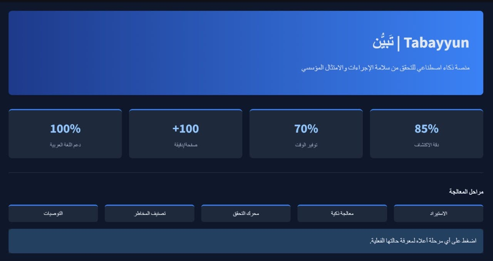
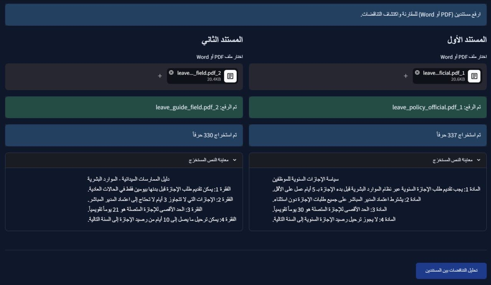
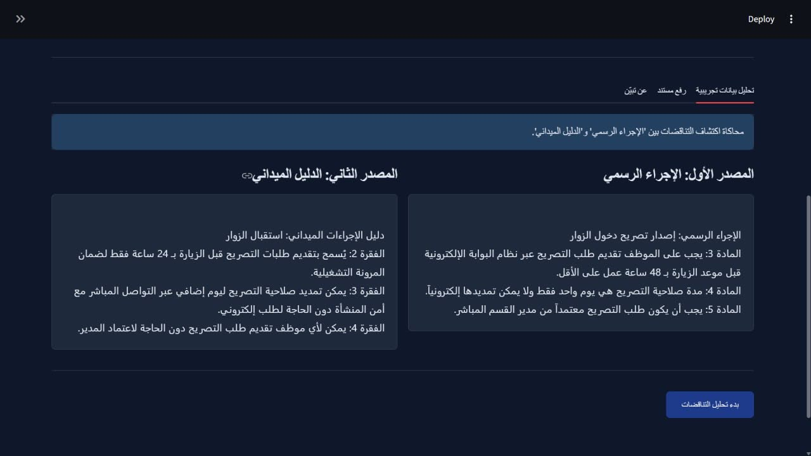

منصة ذكاء اصطناعي للتحقق من سلامة الإجراءات والامتثال المؤسسي
تَبيُّن هو منصة ذكية تستخدم الذكاء الاصطناعي لمراجعة الوثائق والإجراءات تلقائياً. تقوم المنصة باكتشاف التناقضات والمعلومات الناقصة بين المصادر الرسمية والدليل الميداني، لضمان سلامة المعرفة المؤسسية قبل وقوع الأخطاء.
لوحة تحكم حديثة تدعم الوضع الليلي (Dark Mode) مع مراحل معالجة تفاعلية توضح كيفية عمل الذكاء الاصطناعي خطوة بخطوة.
محرك استخراج نصوص متقدم يدعم ملفات Word و PDF العربية، مع القدرة على مقارنة مستندين طويلين في ثوانٍ.
يعتمد على نموذج Qwen2.5 7B عبر Ollama، مما يضمن بقاء بيانات الجهات الحساسة داخل شبكتها المحلية.
يحدد النظام نسبة دقة كل تناقض (Confidence Score) ويصنف المخاطر إلى (مرتفع/متوسط/منخفض) لمساعدة المدراء.
شاهد المنصة وهي تعمل: من رفع الملفات إلى استخراج العناصر الإجرائية واكتشاف التناقضات.

الواجهة الرئيسية: تظهر المؤشرات الأدائية ومراحل المعالجة التفاعلية (الاستيراد، المعالجة الدلالية، محرك التحقق).

ميزة رفع الملفات: دعم كامل لملفات PDF و Word مع استخراج فوري للنص وعرضه للمراجعة.

النتائج: استخراج العناصر الإجرائية (الخطوات، الشروط، المدد الزمنية) من كلا المستندين للمقارنة الدقيقة.